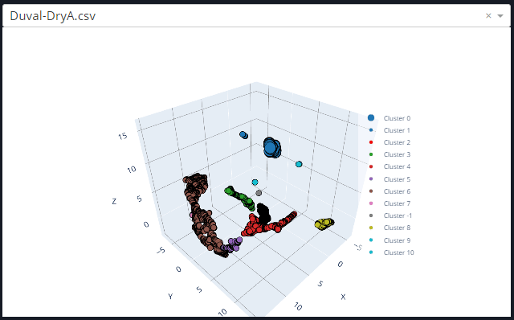
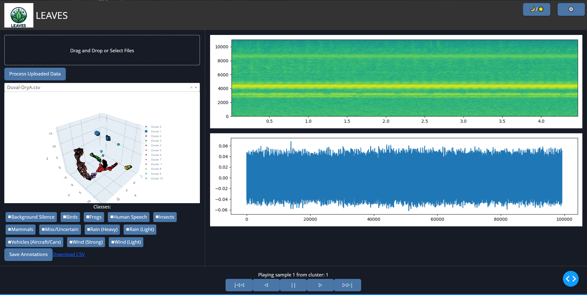
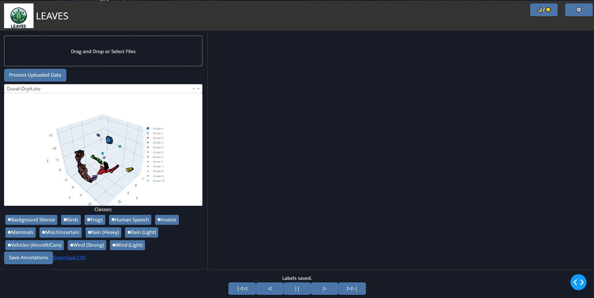
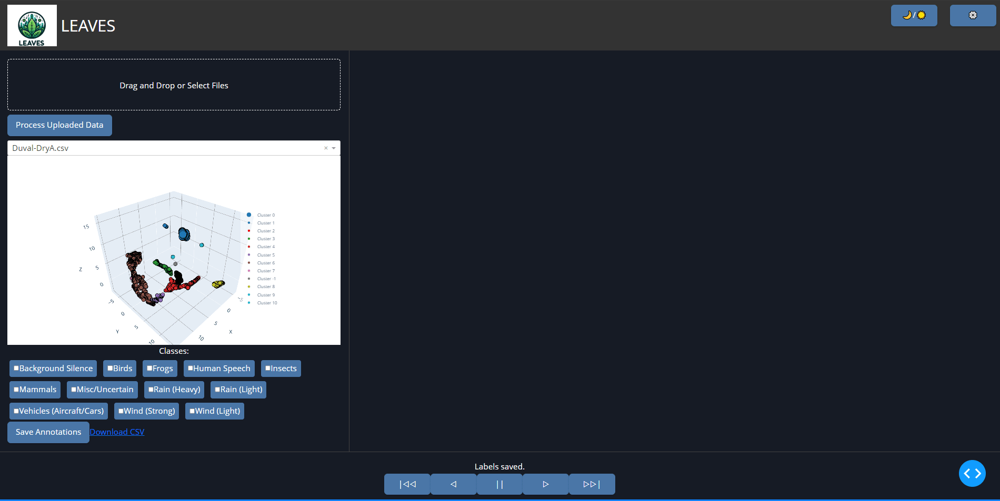

LEAVES: Large-scale Ecoacoustics Annotation and Visualization with Efficient Segmentation
Streamline your ecoacoustic analysis with LEAVES, offering advanced tools for large-scale soundscape annotation and visualization. Join researchers and citizen scientists using LEAVES to analyze complex soundscapes faster and more accurately.
➤ Downloading the LEAVES Application
LEAVES is available for both technical users (Python-based installation) and general users (precompiled executable for Windows and macOS). Follow the steps below to get started:
Option 1: Precompiled Executable
For ease of use, download the ready-to-use version of LEAVES:
- Visit the LEAVES Releases Page.
- Select the appropriate version for your operating system (Windows or macOS).
- Extract the downloaded .zip file and double-click the executable to launch the application.
Option 2: Python Installation
If you prefer to use the Python version, follow these steps:
- Ensure Python 3.8 or later is installed on your machine.
- Clone the LEAVES repository using the command:
git clone https://github.com/thomasnapier/LEAVES.git - Navigate to the LEAVES directory:
cd LEAVES - Install dependencies using pip:
pip install -r requirements.txt
- Run the application locally:
python app.py
- Open the URL provided in the terminal (e.g., http://127.0.0.1:8050) to access the tool.
➤ File Uploading and Processing
The first step in using LEAVES is uploading your audio files for analysis. Follow the instructions below to upload, process, and visualize your ecoacoustic data:
Supported File Formats
LEAVES supports the following audio file formats:
- WAV – Commonly used for high-quality recordings.
- MP3 – Compressed format suitable for larger datasets.
- FLAC – High-quality lossless audio format.
Steps to Upload and Process Data
-
Access the Upload Module:
Navigate to the top section of the interface where you will see the drag-and-drop area labelled "Drag and Drop or Select Files."
-
Drag and Drop Files:
Drag your audio files from your computer and drop them into the upload box. Alternatively, click the box to open a file browser and select your files manually.
-
Start Processing:
Click the "Process Uploaded Data" button to begin the analysis. The system will extract features, reduce complexity, and cluster the data in real-time according to your settings configuration.
-
View the 3D Scatterplot:
Once processing is complete, your data will be displayed in an interactive 3D scatterplot. Each point represents a segment of your audio data, grouped into clusters.
Visualization in the 3D Scatterplot
The scatterplot provides an interactive view of your data:
- Points are color-coded based on their clusters, which represent similar acoustic features.
- Hover over points to see details about the audio sample (e.g., cluster number, coordinates).
- Click on a point to listen to the corresponding audio and view its waveform and spectrogram.
Troubleshooting Tips
- If your file doesn't upload, ensure it is in one of the supported formats (WAV, MP3, or FLAC).
- If the scatterplot doesn’t update, verify that you clicked the "Process Uploaded Data" button after uploading your files.
- For large datasets, processing time may vary based on your computer's performance.
Example
See the GIF below for a demonstration of the file uploading and processing workflow:
➤ Annotation
The annotation process in LEAVES allows users to assign meaningful labels to audio samples, facilitating the creation of high-quality labeled datasets. This process integrates audio playback, waveform and spectrogram visualization, and cluster-level interaction for efficient annotation.
Steps for Annotation
-
Select a Cluster or Point:
Navigate the 3D scatterplot to locate clusters or individual points that need annotation. Use zoom and pan controls to focus on specific areas.
Tip: Clusters are color-coded to represent groups of similar acoustic features.
-
Click on a Point:
Click on a point in the scatterplot to reveal its audio sample. This action displays the following details:
- A waveform visualization of the sample.
- A real-time spectrogram showing frequency, time, and amplitude.
- Playback controls to listen to the audio.
-
Label the Sample:
Below the visualization, select one or more labels from the checklist to annotate the sample. The checklist includes predefined classes (e.g., "Bird", "Insect", "Rain") or custom labels based on your study.
-
Propagate Labels (Optional):
After labeling a subset of points in a cluster, you can propagate the most common label across the remaining points in the cluster automatically. This feature saves time while maintaining accuracy.
Note: In case of a tie between labels, a tie-breaker algorithm will suggest the appropriate label based on hierarchical relationships.
-
Navigate Between Clusters:
Use the navigation controls to move between clusters and repeat the annotation process for other groups of samples.
Keyboard Shortcuts
To streamline the annotation process, use the following shortcuts:
- Spacebar: Play/pause the audio sample.
- Arrow Keys: Navigate between points in the scatterplot.
- Enter: Confirm a label selection.
Troubleshooting Tips
- Audio not playing: Ensure your system volume is turned up and your browser supports audio playback.
- Labels not saving: Check if you clicked "Save Annotations" after labeling. This button ensures your labels are recorded in the dataset.
- Unclear spectrogram: Adjust preprocessing settings in the configuration modal for improved signal clarity.
Example
See the GIF below for a demonstration of the annotation process:

➤ File Storage and Selection
LEAVES handles file storage efficiently to keep your uploaded and processed data organized. This section explains where files are stored, how to access them, and how to select between datasets within the application.
File Storage Location
When you upload audio files to LEAVES, they are stored locally in a designated folder on your system. By default:
- The uploaded files are saved in the
uploadsdirectory within the application's folder. - Processed datasets and temporary files are managed automatically to ensure efficient performance.
Note: The storage path may vary if you are using a precompiled executable versus the Python version. Refer to the documentation for your specific installation.
Dataset Selection
If you upload multiple datasets, LEAVES provides a drop-down menu for easy switching between them. This feature is particularly useful for managing and annotating large-scale ecoacoustic data.
-
Locate the Dataset Dropdown:
The dataset selection dropdown is located above the 3D scatterplot interface. It displays the names of all currently uploaded datasets.
-
Select a Dataset:
Click the dropdown and choose the desired dataset from the list. The scatterplot and other visualization elements will update automatically to reflect the selected dataset.
-
Manage Uploaded Files:
Uploaded files remain available within the application until they are manually removed. You can delete files directly from the local storage folder if needed.
Troubleshooting Tips
- Cannot locate uploaded files: Verify that the files are stored in the
uploadsdirectory. If you are using a custom directory, check your configuration settings. - Dataset not appearing in the dropdown: Ensure that the file upload and processing steps were completed successfully. Only processed datasets will appear in the list.
- Accidentally deleted a dataset: Re-upload the files and process them again to restore the dataset.
Example
See the GIF below for a demonstration of selecting and managing datasets:

➤ Cluster Filtering and Point-Click Interaction
LEAVES provides tools for filtering clusters and interacting with individual data points in the 3D scatterplot. This functionality allows users to focus on specific subsets of data and inspect them in detail.
Steps for Cluster Filtering
-
Access the Filtering Options:
Located near the scatterplot, the filtering panel includes controls to adjust which clusters are displayed based on criteria such as cluster size, density, or specific labels.
-
Filter by Cluster Properties:
Use the sliders and checkboxes in the filtering panel to apply the desired filters. For example:
- Minimum Cluster Size: Hide smaller clusters by setting a threshold.
- Specific Labels: Focus on clusters containing specific labels.
- Noise Filtering: Exclude points identified as noise by the clustering algorithm.
-
Apply the Filters:
The scatterplot updates dynamically as filters are adjusted, allowing you to see only the data of interest.
Point-Click Interaction
Once the desired clusters are visible, you can interact with individual points to inspect them further:
-
Select a Point:
Click on any point in the scatterplot to display detailed information about the audio segment it represents.
-
Audio Playback:
Play the audio sample associated with the point using the playback controls.
-
Visualization:
View the waveform and spectrogram of the selected audio sample for a deeper analysis of its acoustic properties.
-
Annotate the Point:
Assign labels to the point if needed. This annotation is saved along with the dataset.
Troubleshooting Tips
- Filters not working: Ensure the clustering algorithm has completed processing and generated valid clusters.
- Points not clickable: Check if the scatterplot is fully loaded and zoom in for better precision in dense clusters.
- Audio not playing: Verify your browsers audio settings and ensure the file is correctly linked in the dataset.
Example
See the GIF below for a demonstration of cluster filtering and point-click interaction:
➤ Saving Annotations
Once you have labeled your clusters and individual points, you can save your annotations to ensure your work is preserved and ready for further analysis. This section explains how to save, manage, and export your annotated datasets.
Steps for Saving Annotations
-
Complete Your Annotations:
Ensure all desired clusters and points are labeled. Review your annotations by revisiting clusters and checking labels in the annotation panel.
-
Click the "Save Annotations" Button:
Once you are satisfied with your labels, click the "Save Annotations" button located in the control panel. This action saves your annotations to a CSV file.
-
Download the CSV File:
The saved file will include metadata such as cluster coordinates, audio file paths, and the assigned labels. Use the "Download Annotations" button to export the file to your system.
File Format
The exported annotations are stored in a CSV file with the following structure:
Cluster_ID:The ID of the cluster the point belongs to.Point_Coordinates:The coordinates of the point in the scatterplot.Audio_File_Path:The file path of the associated audio sample.Labels:The labels assigned to the point or cluster.
This format is compatible with most data analysis tools and can be easily re-imported into LEAVES for further processing.
Troubleshooting Tips
- Annotations not saving: Ensure you clicked the "Save Annotations" button after completing your labels.
- CSV file not downloading: Check your browser’s download permissions and ensure pop-ups are allowed for the application.
- Annotations missing after re-import: Verify that the CSV file was correctly saved and includes all required fields.
Example
See the GIF below for a demonstration of saving and downloading annotations:
➤ Settings Configuration
The LEAVES application offers a robust settings modal that enables users to customize the analysis pipeline, from preprocessing to clustering. Each setting is designed to fine-tune the workflow and optimize performance for specific datasets.
Accessing the Settings
-
Open the Configuration Panel:
Click the ⚙️ icon in the top-right corner of the application to open the settings modal.
-
Adjust the Parameters:
Use the sliders, dropdowns, and toggle buttons to modify settings in the following categories:
Settings Overview
1. Preprocessing
- Systematic Data Sampling: Enable this toggle to sample a percentage of the dataset for processing, reducing computational load. Default: Enabled.
- Short-Term Windowing: Splits audio files into smaller segments (e.g., 4.5 seconds) for detailed analysis. Default: Enabled.
- Windowing Input: Adjust the segment duration using a slider or input field. Range: 1–10 seconds. Default: 4.5 seconds.
- Data Sampling: Specify the maximum duration of audio to process in minutes. Range: 0–40 minutes. Default: 20 minutes.
- Denoising Method: Choose from various denoising techniques:
- None: No noise reduction applied (default).
- Wavelet-based: Applies wavelet filtering for noise suppression.
- Low-pass: Retains lower frequencies while filtering out higher ones.
- High-pass: Retains higher frequencies while filtering out lower ones.
- Band-pass: Retains frequencies within a specified range.
2. Feature Extraction
- Min-Max Normalization: Scales features between 0 and 1 for consistency across datasets. Default: Enabled.
- Include MFCC Derivatives: Adds first and second-order derivatives of MFCC features, capturing temporal dynamics. Default: Disabled.
3. Complexity Reduction
- Reduction Method: Select a dimensionality reduction technique:
- UMAP: Optimized for high-dimensional data visualization (default).
- t-SNE: Captures local and global structures in the data.
- PCA: Projects data onto principal components for simpler representation.
- UMAP Settings:
- N Neighbors: Determines the number of neighboring points considered. Range: 5–50. Default: 15.
- Min Distance: Controls the spacing of points in the low-dimensional space. Range: 0.0–1.0. Default: 0.1.
- t-SNE Settings:
- Perplexity: Adjusts the balance between local and global structure. Range: 5–50. Default: 30.
- Learning Rate: Controls the speed of convergence. Range: 10–1000. Default: 200.
- PCA Settings:
- Number of Components: Sets the number of principal components to retain. Range: 1–100. Default: 2.
4. Clustering
- Clustering Algorithm: Choose a clustering method:
- DBSCAN: Density-based clustering with adjustable Eps and Min Samples (default).
- k-means: Groups data into a specified number of clusters.
- Agglomerative: Hierarchical clustering based on a distance metric.
- DBSCAN Settings:
- Eps: Maximum distance between points in the same cluster. Range: 0.0–5.0. Default: 0.5.
- Min Samples: Minimum points required to form a cluster. Range: 1–100. Default: 5.
- k-means Settings:
- Number of Clusters (k): Sets the number of clusters to form. Range: 1–100. Default: 3.
- Agglomerative Settings:
- Linkage Type: Determines how clusters are merged (e.g., Ward, Complete, Average, Single). Default: Ward.
- Distance Threshold: Sets the maximum distance for merging clusters. Range: 0–100. Default: 10.
Applying Changes
- Modify Settings: Adjust parameters as needed using the modal controls.
- Save Settings: Click the Done button to apply the changes. The scatterplot and analysis pipeline will refresh automatically.
Example
See the GIF below for a demonstration of configuring settings:
➤ Cluster Annotation Switching
LEAVES provides tools to quickly modify annotations at the cluster level, ensuring efficient relabeling or updating of cluster-wide labels. This functionality is designed to save time while maintaining flexibility in the annotation process.
Steps for Cluster Annotation Switching
-
Select a Cluster:
Identify the cluster you want to modify by locating it on the 3D scatterplot. Clusters are color-coded and can be filtered for easier navigation using the filtering panel.
-
Open the Annotation Panel:
Click on the cluster or a point within the cluster to bring up the annotation panel. This panel displays the current label(s) applied to the cluster or point.
-
Edit the Labels:
Update the cluster annotation by:
- Adding a New Label: Use the label selection interface to add additional labels that describe the cluster's content.
- Removing an Existing Label: Uncheck the labels you want to remove from the cluster.
- Replacing a Label: Uncheck the old label and select the new label(s).
-
Propagate the New Label:
Once updated, the new label is propagated across all points in the cluster. Any annotations at the point level can be overridden or retained based on your selection.
-
Review the Changes:
Revisit the cluster on the scatterplot to ensure the new labels have been applied as intended. Labels will appear in the annotation panel and the associated metadata.
Example
See the GIF below for a demonstration of switching cluster annotations:
